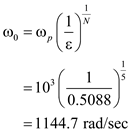
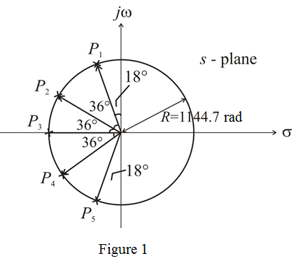

Simplify further.
Simplify further.
Thus, the poles of the Butterworth filter are,
 .
.
The natural modes lie on a circle of radius defined by following equation:
.
The parameter which determines the maximum variation in passband transmission is,
Thus, the radius of the circle on which the natural modes lie is,
The natural modes of the filter are spaced by equal angles of .
The first mode angle from the axis is,
Since, the natural modes all have equal radial distance from the origin, they all have the same frequency.

The graphical construction for determining the natural modes of 5th-order Butterworth filter is shown in Figure 1.

Simplify further.
Simplify further.
Thus, the poles of the Butterworth filter are,
.